부모님과 아내와 아이들, 동네 짜장면 집과 순대국집, 재래시장과 친구들 — 날마다 만나는 사람들 속에서 길어 올린 시들입니다.
시마다 끝에 언제 어디서 썼는지를 적은 지은이의 메모를 그대로 두었고, 주제를 따라 넷으로 나누었습니다.
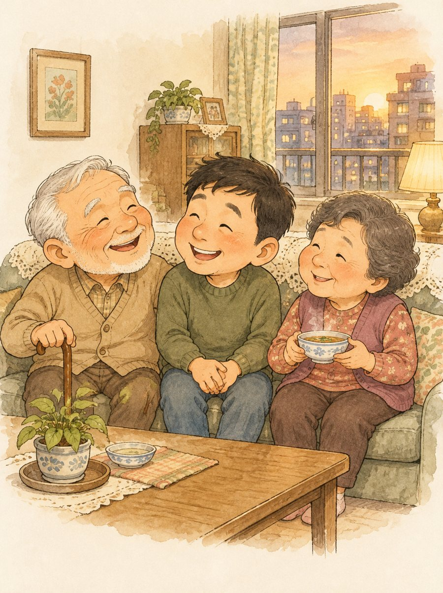
1부 아버지, 어머니
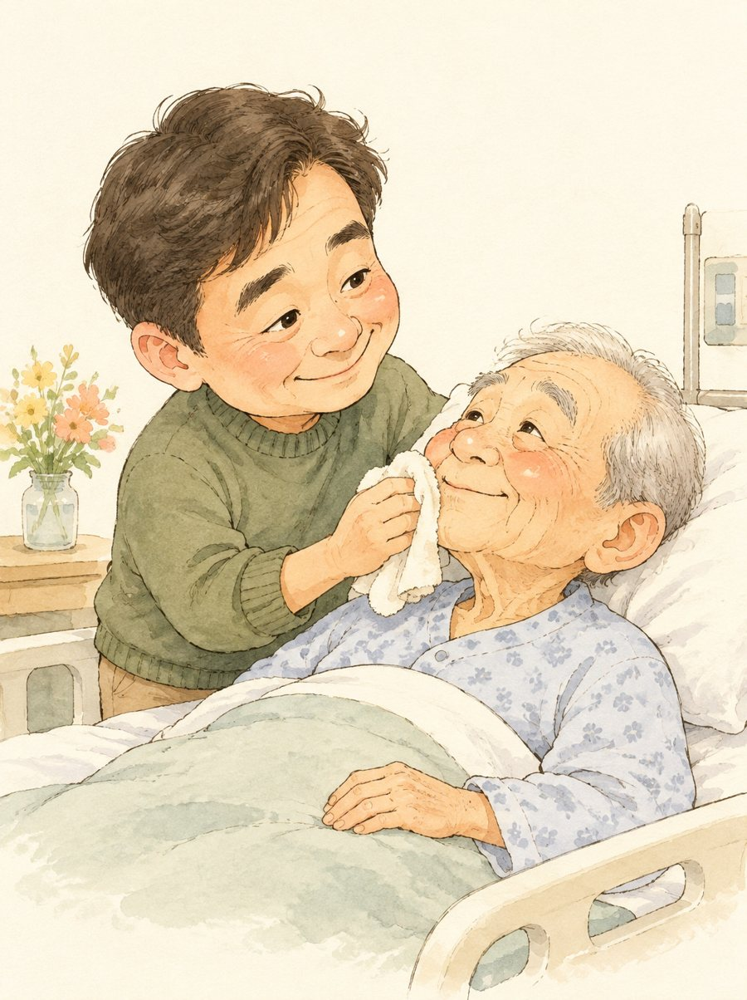
아버지의 얼굴
내 얼굴 코 흘리면 닦아주고 놀다 돌아오면 세수 세수 후에 촉촉한 로숀 코피나면 뽀송 솜 막아주고 아버지의 사랑의 캔버스
아버지 얼굴 이마 주름살 세상살이 찌든 검버섯 다 빠진 치아 거친 흰 수염
밥 떠 드리고 눈꺼풀 떼 드리고 콧물 훔쳐 드리고 머리 쓰다듬어 재워드리고 얼굴 세수 시켜 드리니 이제야 만분의 일 아버지 사랑갑네
아버지 얼굴 아들의 사랑의 스케치북
2011년 7월 29일(금)
2011년 여름 아버님이 강남병원에 저혈당으로 입원하여 병실에서 간호하며 얼굴을 닦아드리면서 적어보았다.
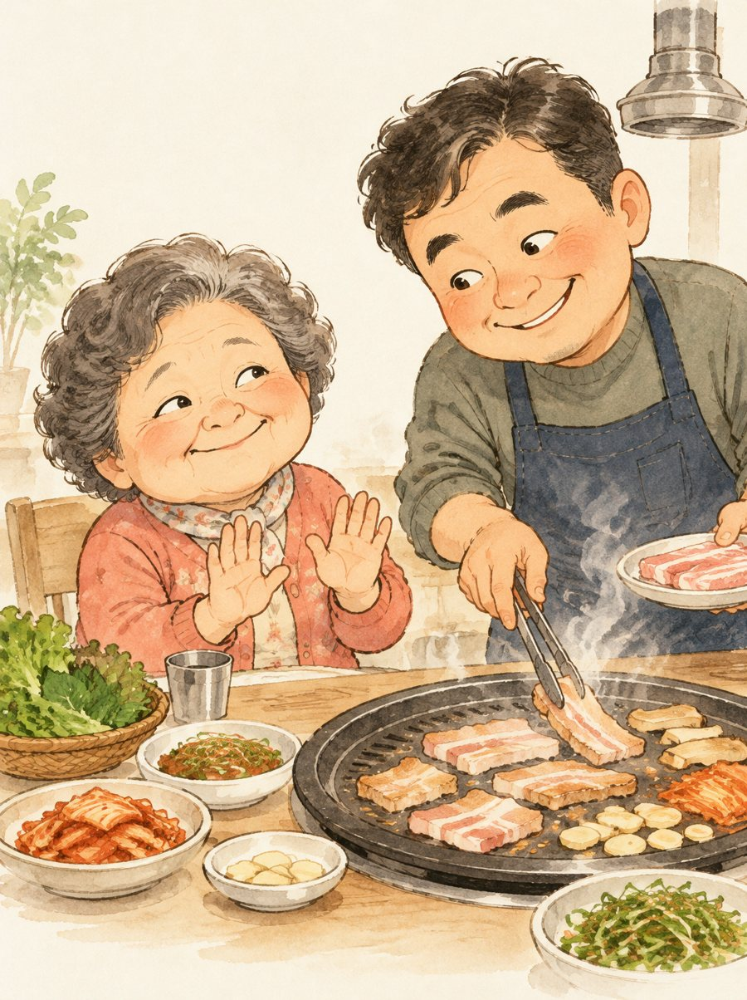
삼겹살
어머님이 기운이 없으시다 영양제 맞으러 병원에 가자는 말에 반가운 듯 피식 웃음 “왜 기운일 없을까” 의사의 다정한 말에 기분 좋은듯 “나두 몰라유” 영양제 기운에 얼굴에 약한 홍조 집에 갈 때 삼겹살 먹자는 말에 입으론 “돈 드는데 뭔 괴기여” 완강한 거절 얼굴엔 “내가 제일 좋아하는 삼겹살”하며 반가운 미소 삼겹살 집 앞 차 세우니 먼저 내려 자리 잡으시네 노릇노릇 잘 익은 삼겹살 실컷 드시면 좋으련만 몇 점 드시고 수저 놓으니 내 맘 괜시리 내려 안네 다음엔 꼭 잘 드시기를 바라는 맘에 내 맘은 벌써 기도 모드 들어갔네
2011년 7월 11일(월)
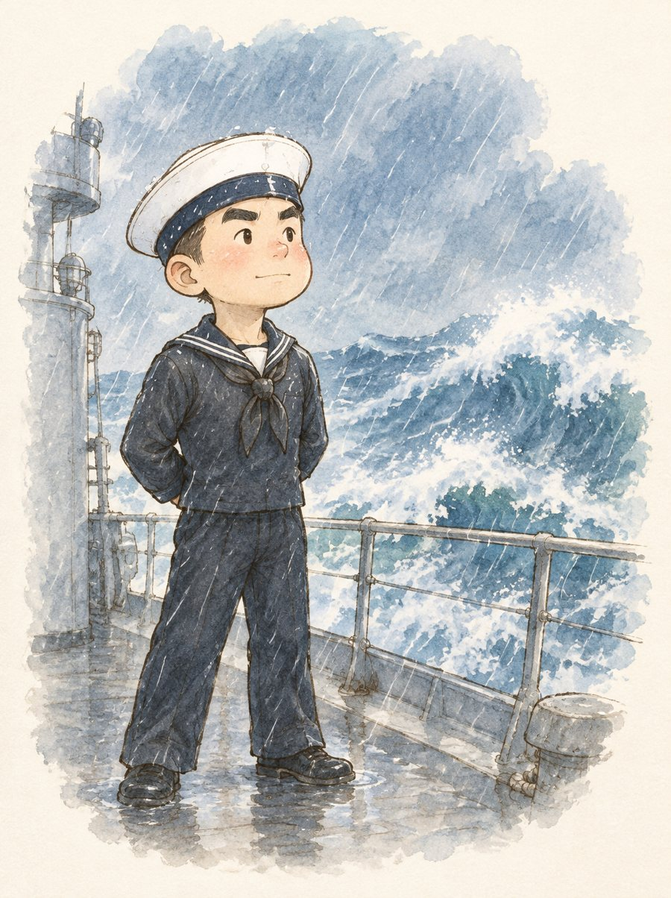
물
나의 아버지는 물이셨다 6.25때 쏟아지는 비속에서 공비를 토벌하셨다 망망대해 물바다 위에서 떠다니시고 뭐에 노했는지 성난 파도에 떠밀리며 사투를 벌렸다
울고 싶을 땐 비가 내리는 날을 택해 빗물 속에 눈물을 흘려보내고 그마저도 안 되면 눈물을 속으로 머금었다 그 물들이 모여 깊은 강이 되어 나의 아버지를 삼켰다
나의 아버지는 물 나는 그 물을 마셨고 그 물이 나에게 생명수 나의 아버지는 생명의 물
2012년 12월 19일(수) 광은기도원에서 아버님의 생애를 생각하며 물같이 살아온 삶을 그리워했다.
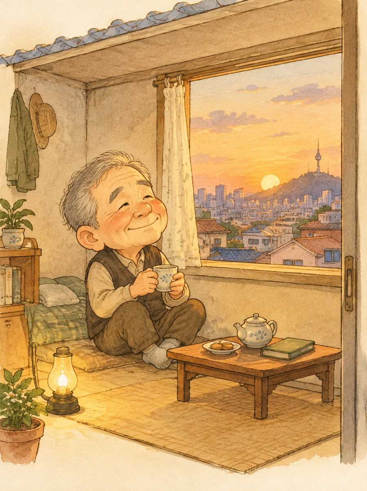
홀로
모태 속 외로운 달음박질 결국 나 홀로 생명 되었거늘 세상 박차고 나오느라 나와의 싸움
좋은 친구 바랐으나 그래도 "나"라는 한 글자 인생 마주 보며 사랑할 베필 소원 왜 그리 물과 기름 자식들과 도란도란 함께 행복 기대도 뒤로 한채
망망대해 검푸른 파도와 씨름도 외로운 싸움 늙은 아비 모시느라 또 딴 살림 자식 목회 도우느라 나 홀로 옥탑 방 자청
바쁜 자녀들 신세 피해 요양원으로 떠밀리심 마지막 미고운 정 떠나는 날까지 혼자셨네 나의 아버님 인생 늘상 “홀로”
아니 언제나 함께 하신 주님이 곁에 계시니 아버님 인생 언제나 “함께” 그래도 주님과 헤어지지 않을 곳으로 이 땅의 외로움 다 잊으려네
2012년 12월 12일(수) 아버님 장례식장에서 아버님의 인생을 돌아보며 가족과 떨어져서 홀로 지내신 시간들이 많음을 돌아보며 지었다.
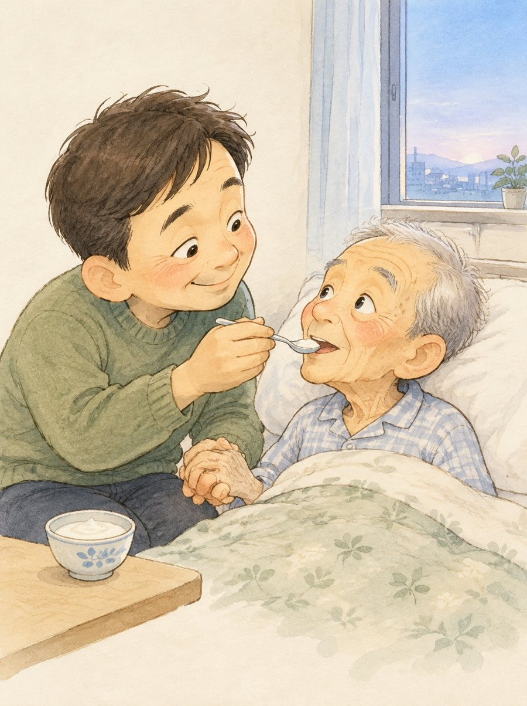
새벽에 홀로 깨어
아버지 꿈을 꾸었습니다 아버지가 곁에 계셨습니다 당연히 그래야 되고 내가 편안했습니다 꿈 속에 아버지를 만나다 깨어 홀로 않았습니다
2012년 월부터 6개월 동안 꿈만 같았습니다 돌아가신 날도 2012년 12월 12일 내 생일이었습니다 위독하신 순간에는 살아내시기를 간절히 기도했습니다 일어나셔서 짜장면을 같이 드시러 가시는게 소원이었습니다 다행히 기적적으로 회복되셨고 대화도 가능했습니다 저는 아버지가 보고 싶었습니다 매일 뵈러 갔습니다 손을 잡아 드리고 요구르트를 떠 드렸습니다 꿈만 같은 시간이었습니다
어느 날 역정을 내시는데 달라지셨구나 생각되었습니다 그 후로 매일 찾아 뵙기가 힘들었습니다 가끔 찾아 뵈면서 죄송했습니다 아프시다는 소식과 함께 갑자기 떠나셨습니다 급하게 홀로 가셨습니다 홀로 누워 계시는 날들이 힘드셨나 봅니다 다시 병원 가고 회복되면 또 홀로 그것이 힘드셔서 그렇게 성급히 떠나셨군요 주님이 우리 아버지 사랑하셔서 고통 덜어 드리려고 데려가셨군요 새벽에 홀로 깨어 아버지의 마음을 헤아렸습니다 아버지의 빈자리가 느껴집니다 그런데 . . . 세월이 흐를수록 점점 더 멀어집니다
2013년 2월 16일(토) 집에서 아버지 꿈을 꾸고 깨어 지난 6개월 간 아버지 아프시고 돌아가시기 까지 과정을 되 집어 보았다.
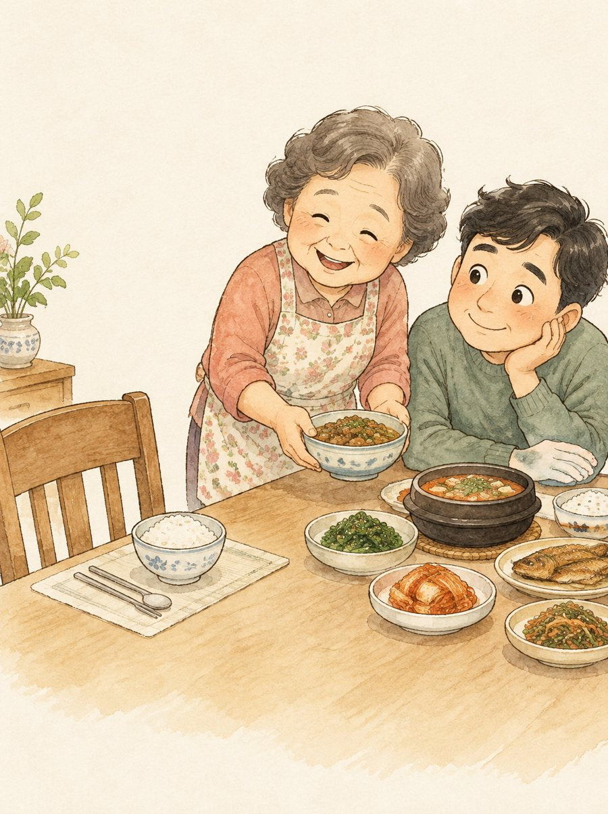
아버지 자리
아버지가 앉던 식탁에 앉으니 어무이 차려 내 받은 밥상 아버지 자리
소파 앉아 쉬던 자리 그 자리 스며오는 아버지 숨결 헛기침 재선아! 힘겨운 사랑의 음성 아버지 자리
잊었던 온기 새롭다 언제나 그 자리 맘 자리 늘 계시는 아버지 자리
그 자리 나를 있게 하고 든든히 있는 듯 없는 듯 버팀목 되시는 아버지란 이름
2013년 12월 7일 어머니 집에 가서 같이 식사하며 아버지의 빈자리를 보았다.
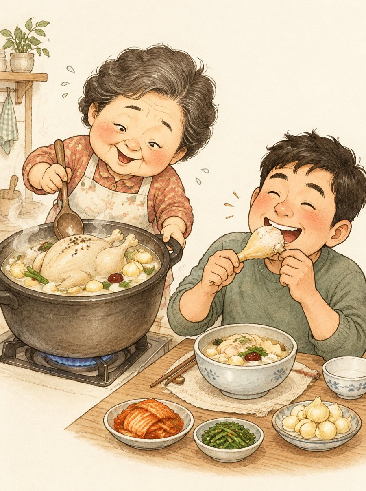
주고 잡아서
기뚱기뚱 꼬무락 꼬무락 어무이의 서툰 손놀림
아들 주고 잡아 씨암탉 다듬고 마늘 듬뿍 넣어 푹 고아 내내
쫄깃쫄깃 닭다리 한 손 들고 한 입 가득 한 그릇 뚝딱
부른 배 닭 한 마리로 가득 어무이 사랑 채우네
2013년 12월 7일 어머님 댁에서 어머니가 준비한 식사를 먹으며 적어 보았다.
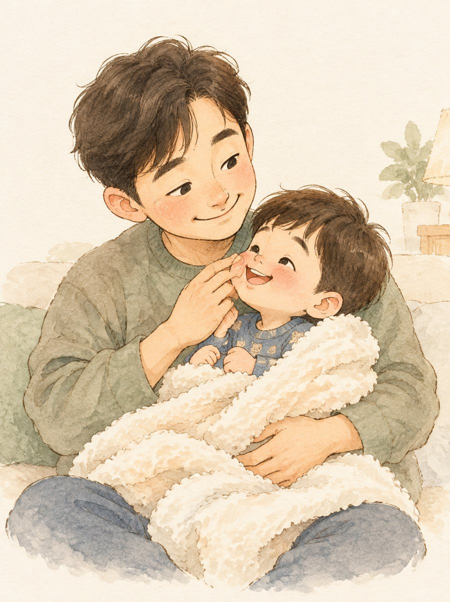
나의 아버지
아버지, 입의 읊조림 만으로만 남은 꿈에서만 만날 수 있는 가슴 속에 꼬옥 모셔 둔 이름
아버지, 따스한 손 볼 만져주시고 0 0 아! 애정 듬뿍 담아 불러주시고 솜이불 푹신한 가슴으로 안아주신 분
아버지, 이름만으로도 부를 수 있음만으로도 곁에 계신 것처럼 생각만으로도 힘이 되고 용기 풍선 띄워주시는 영원한 이름 아·버·지 나의 아버지
2014년 1월 29일(목) 00성도님의 아버지 장례 답례 문자를 받고 지어보았다.
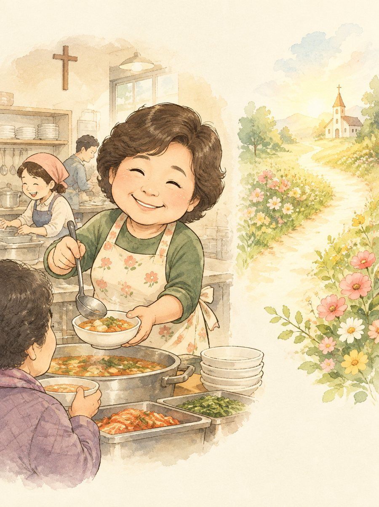
작은 엄니
작은 엄니가 가셨다
투석에 신장암의 짐을 벗어 던지셨다
남편의 지극정성 등에 업혀 가셨다
따사로운 등의 온기에 영원히 잠드셨다
온 몸 바스라지는 교회 봉사
시댁에 인정받기까지 설움의 세월
삼남매 행복해라 애간장 기도
막내 손주까지 장성함 보고
해맑은 미소 띄며 사쁜 발걸음 내디셨네
천국 나그네 정처없는 걸음 끝내셨네
새예루살렘 문을 여셨네
딸아 수고했다 두 손 벌려 맞아 주시는 주님 품에 안기셨네
수고하셨습니다
고생하셨습니다
사랑합니다
우리 작은 엄니
2012년 8월 8일(수)작은어머님 장례식을 마치고 작은어머님을 생각하며 지어보았다.
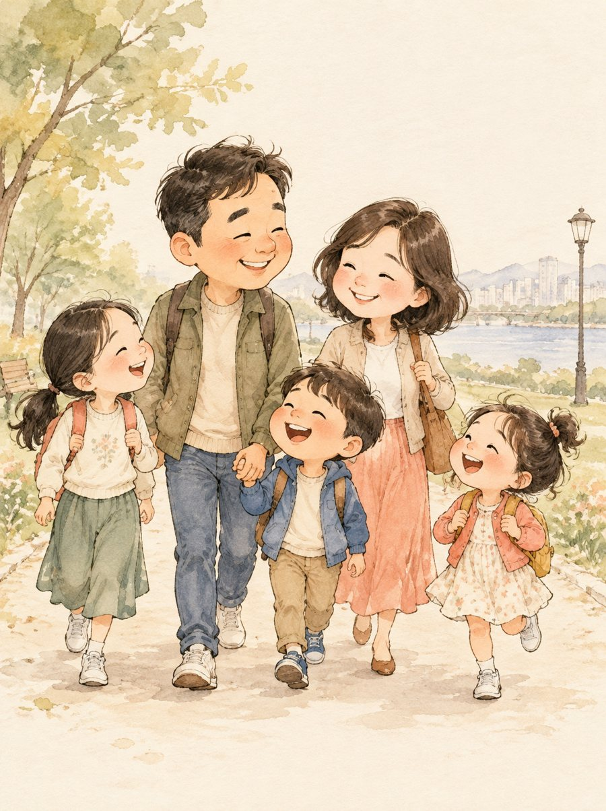
2부 아내와 아이들
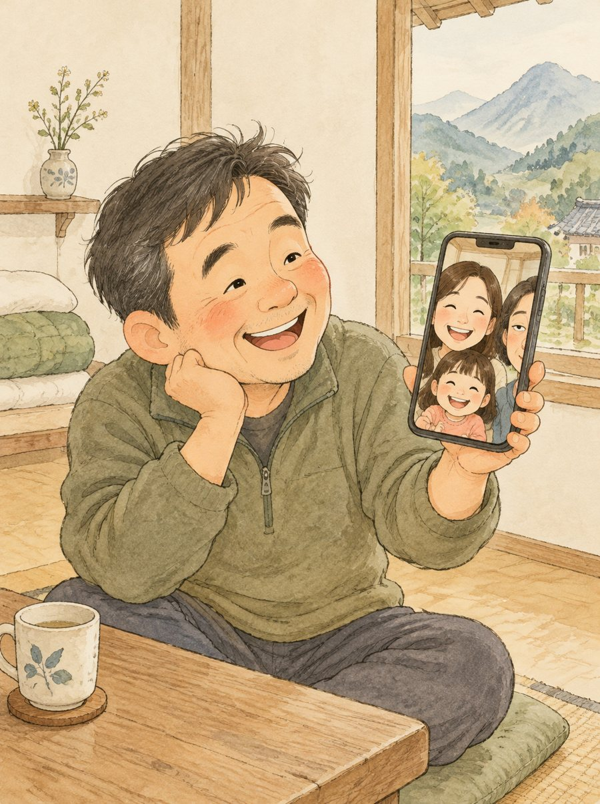
영상통화
기도원으로 영상 전화가 왔다 둘째, 예론이 얼굴이 크게 보인다 밝게 웃고 있다 내가 보고 싶단다 보고 싶어 하는 딸이 있어 좋다
예은이 얼굴이 작게 보인다 나를 빨리 오란다 아빠가 집에 있는 게 좋단다 나를 기다리는 딸이 있어 좋다
아내의 얼굴이 잘 안 보인다 안 보고 싶단다 안 와도 된단다 자기가 다 알아서 한단다 내 귀에는 이렇게 들린다 보고 싶어! 빨리와! 속으로 말했다 내일봐~~~~~
2011년 6월 19일(주일)
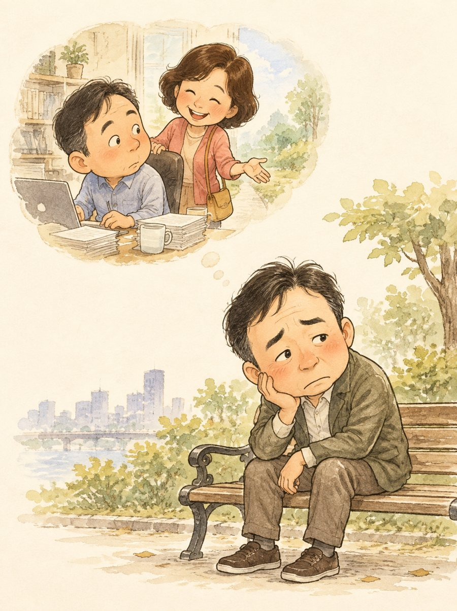
후회
아내가 산책은 안 간단다 외식도 안 나선다 찜질방도 외면 한다 차 마시는 것도 마다 한다 대화도 거부 한다 잠자리 옆에 눕는 것도 싫단다
나는 후회 한다 아내가 바람 쐬자는 것을 외면함을 같이 운동도 외면하고 눈 마주 보기도 부담스러워하고 옆에 앉아 있기도 불편해 하고 쇼핑 함께 하기도 힘들어 하고 큐티 나 홀로 함께 기도보단 나만의 기도 드라이브 귀찮아했던 일들 나는 그 때를 후회 한다
2011년 8월 20일(토)
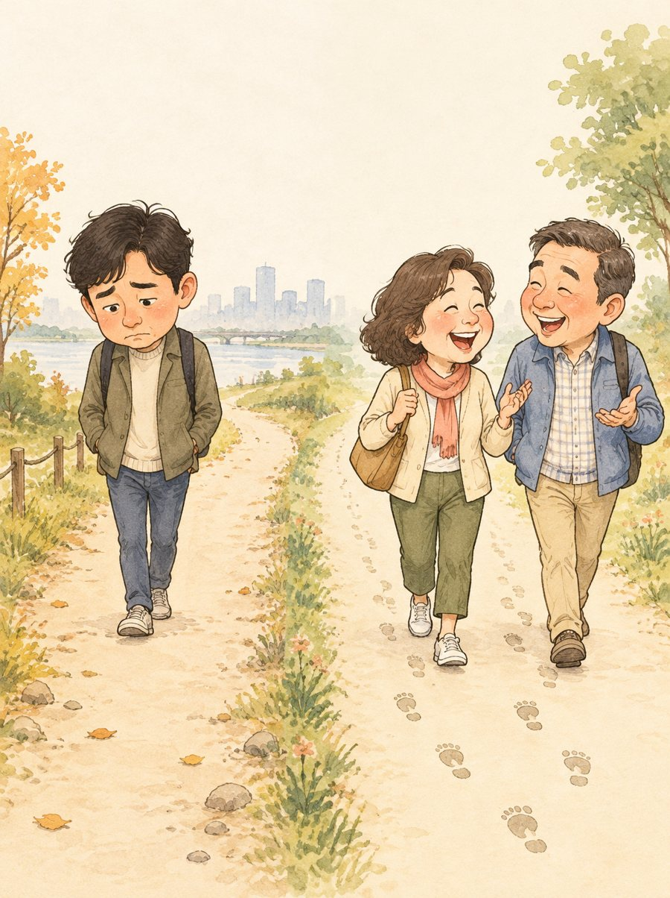
함 께
홀로 걷는 종종 걸음 불안한 걸음 혼자 걷는 사무적 걸음 재미 없는 걸음 나 홀로 걷는 흐느적 걸음 의기 소침 걸음 취객의 갈지자 걸음 절망의 걸음
둘이 걷는 여유 걸음 따스한 걸음 같이 걷는 담소 걸음 행복한 걸음 함께 걷는 생기 걸음 희망의 걸음 신혼 부부 행진의 걸음 축복의 걸음 그대와 함께 걸으리 둘이 걷는 행복 인생 되리
2011년 9월 26(월)
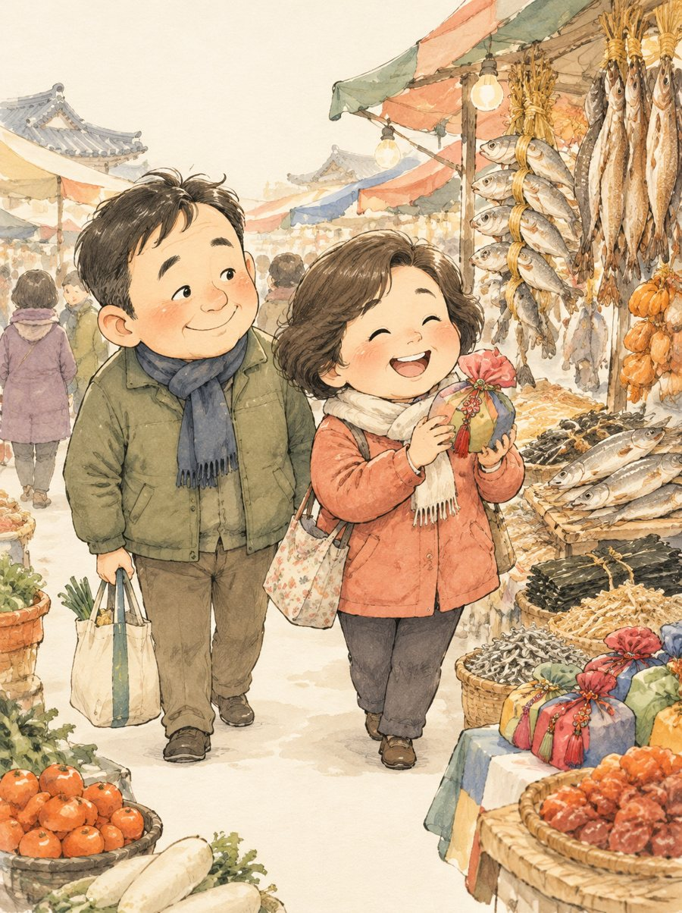
행 복
행복 나의 흐뭇함 너의 기쁨에서 오네
나는 나 너는 너 우리는 놔
너, 나 닮은 하나님의 선물 너와 나 다 말할 수 없듯 우리는 “놔”
“놔” 알아 볼 수 없는 글 우리의 행복 신기하기만 하네 너의 따뜻한 즐거움 나의 포근한 행복
2012년 1월 21일(토)
2012년 1월 21일(토) 구정 설날 앞두고 아내와 함께 남대문 시장에 구경 갔을 때 행복해 하는 아내를 보며 글을 남김
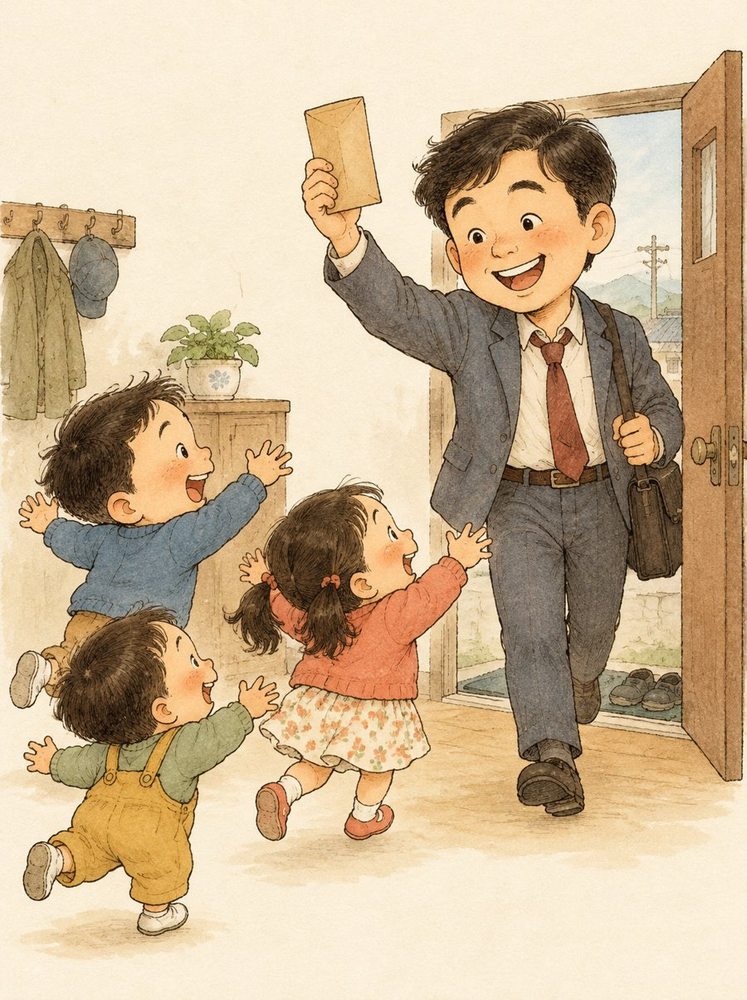
월급 봉투
아버지 마음 주고 싶은 마음 월급 타와 “뭐 갖고 싶냐” 자신감 하늘을 찌른다 “뭐든지 말만해 다해줄게” 기분 좋아 큰 소리 줄 수 있어 행복한 마음 아버지들의 마음
하나님의 마음 주고 싶은 마음 죄 고백만 해도 용서해 주시고 불안하여 기도하면 평안주시고 힘든 삶 호소하면 채워주시네
염려 말고 기도하면 하나님의 평강이 절로 임하네 다 주고 싶은 우리 아버지 하나님 마음
2011년 7월 15일(금)
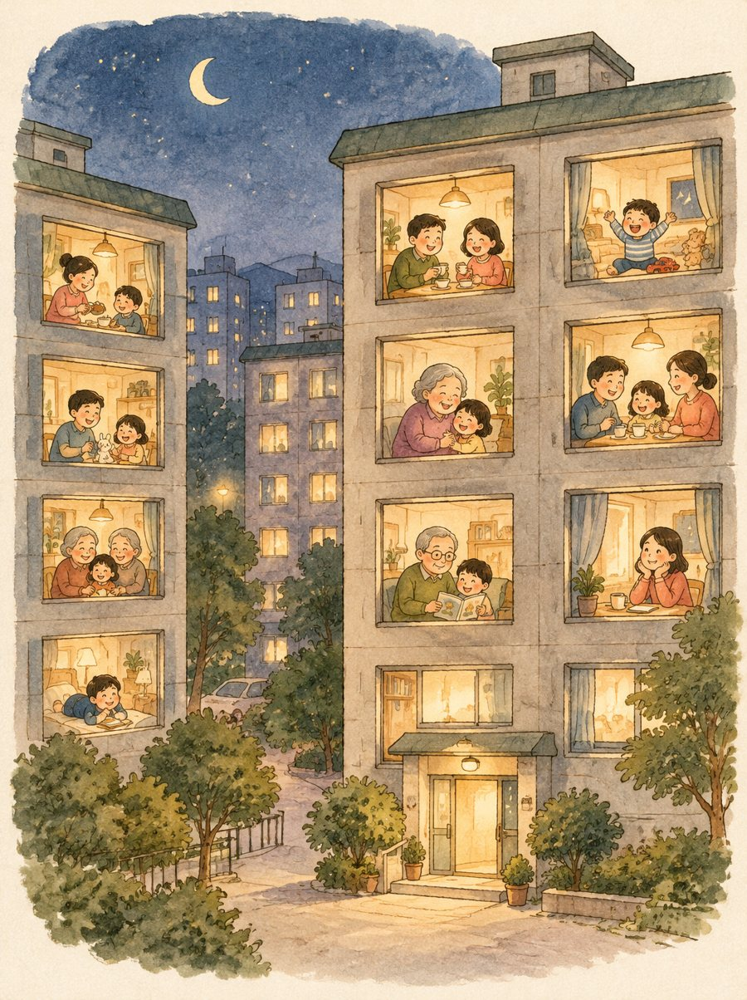
아파트
성냥갑 아파트 엄마 아빠 다정한 차 한 잔 할아버지 할머니 손주 어르고 아들 형제 씨름 놀이 딸 형제 소꿉놀이 온 가족 오손도손 행복한 성냥갑 아파트
성냥갑 바라보며 부러우신 하나님 니들은 뭐가 그리 즐겁니 문 밖 기다리는 우리 하나님 참다 못 해 한 말씀 애들아 나와서 나하고 좀 놀자
2011년 7월 15일(금)
집 앞 산책로를 산책 후에 집에 돌아오면서 보이는 아파트 가정들의 안락함을 보면서 주님의 심정을 헤아려 보았다.
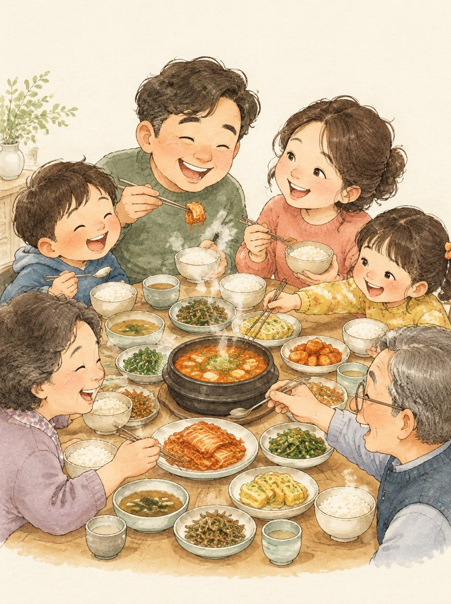
3부 밥 한 그릇
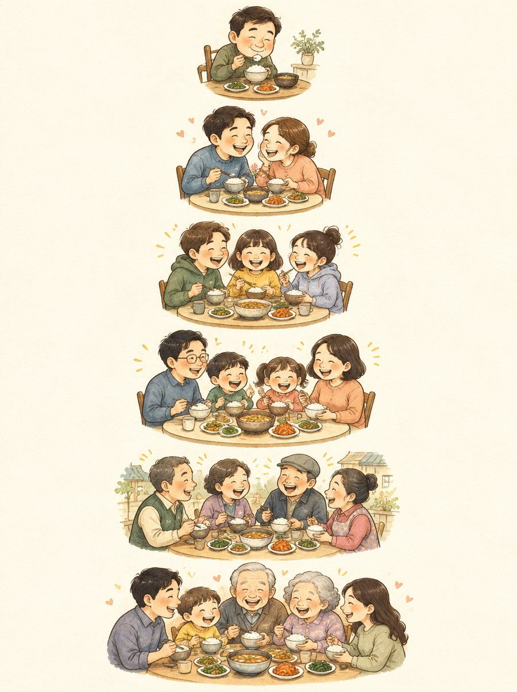
밥
혼자 먹는 밥 탄수화물을 먹는다
둘이 먹는 밥(부부가 먹는 밥) 사랑을 먹는다
셋이 먹는 밥(친구들과 먹는 밥) 우정을 먹는다
넷이 먹는 밥(가족이 먹는 밥) 행복을 먹는다
다섯이 먹는 밥(이웃과 먹는 밥) 기쁨을 먹는다
여섯이 먹는 밥(삼 대가 먹는 밥) 家風을 먹는다
2011년 8월 8일(월)
아내와 두 딸이 캄보디아에 선교비전트립을 간 후에 아들과 둘이 남아 일주일을 지내면서 홀로 밥을 먹으면서 연상이 되었다.
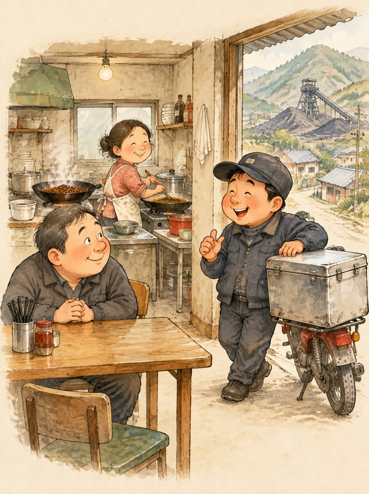
동점 반점
태백 산골 동점 마을 아주 작은 초라한 짜장면 집 허기진 마음에 머쓱이 문을 열었네 짜장면 한 그릇요! 기다려야 되는데 “...” 주방에서 여사장님 독백하듯 “늦게 가도 전화도 안 하네” “밥이 늦어도 재촉도 안 하네 배고플 텐데” ‘내 얘기인가’ 배달 다녀온 배송 담당 남 사장님왈 “내가 왜 재촉을 해 다 아는데”하던데“ “참 고마운 사람들이야” 남녀사장님의 합창 짜장면 한 그릇 느긋하게 기다려 주는 여유 솔직하고 고마운 감사의 마음 보기만 해도 내 얼굴에 피는 흐뭇한 미소
서울 도심의 자장면 집 “얼마나 기다려야 돼요?” “다른 데로 갈까?” “언제 나와요?” “왜 이렇게 안 나와!” “내가 먼저 시켰는데” “언제 도착해요?” “곧 가요!” “막 출발 했습니다.”
오래 기다릴 줄 알았는데 벌써 나왔다. 나는 동점 반점에서 고마운 마음 한 그릇을 먹고 나왔다.
2011년 6월 18일(토)
안식월을 맞아 친구의 교회 태백에덴 교회를 방문해서 동네 자장면집에서 겪은사연을 적어 보았다.
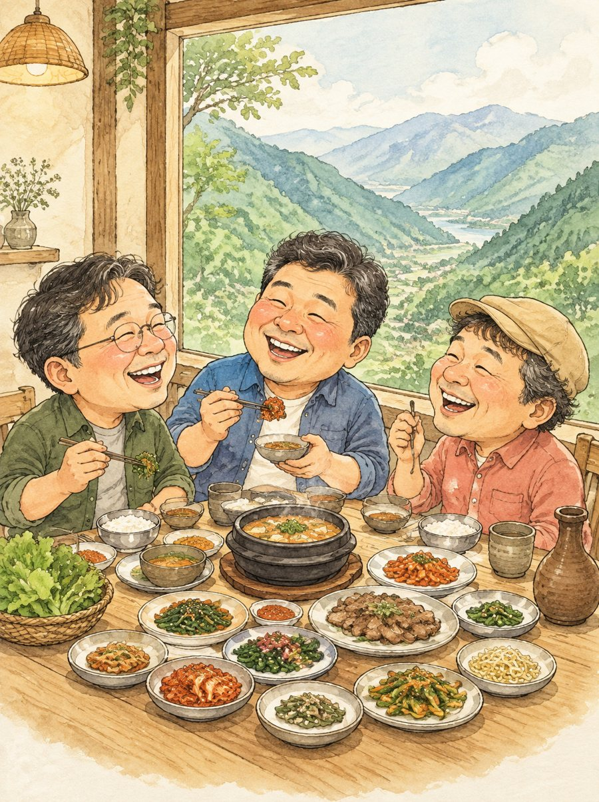
맛
사람이 좋으니 음식이 맛있고
풍광이 아름다우니 사람이 사랑스러워지누나
맛갈나는 음식 품격 있는 내 인생으로 세상을 맛내볼까?
2012년 7월 30일(월) 선교사 부부와 남양주 깊은 산 속 식당에서 밥을 먹고
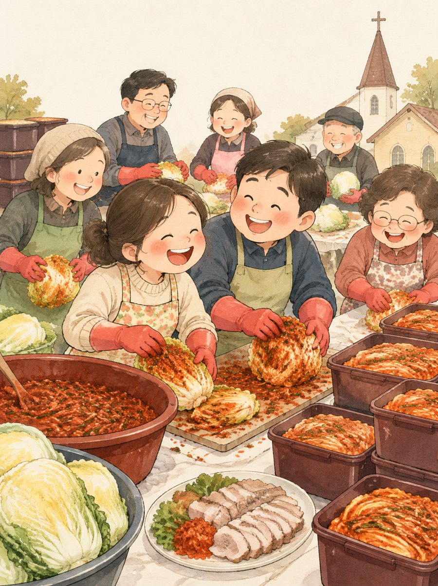
김장
사계절 뚜렷 한겨울 추위 어떻게 견디나
푸짐한 김장 든든한 한파
온 가족 떠들석 부산한 손놀림
소복히 쌓인 김치 통
보기만 해도 푸근한 마음
김치 한 잎에 수육 한 점
한입 가득 행복 가득
2012년 11월 20일(화)조영주집사님댁에서 사역자들과 함께 조영주집사님이 난생처음으로 한 김장김치로 저녁식사를 하고 지어 보았다.
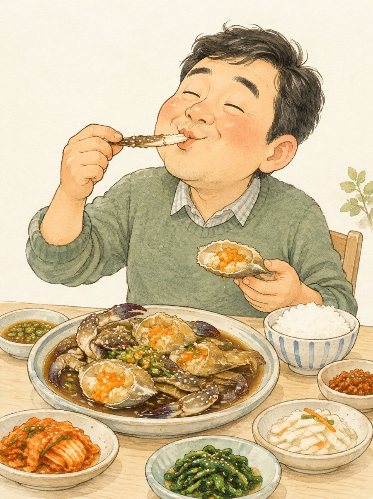
간장 게장
두툼한 살코기의 엉기는 씹힘보다 가느란 다리 한 개 물고 지긋이 물어 빨 때 나오는 즙의 알싸함이 게장의 참맛
2013년 10월 17일(목) 간장게장을 먹으면서 적어 보았다.
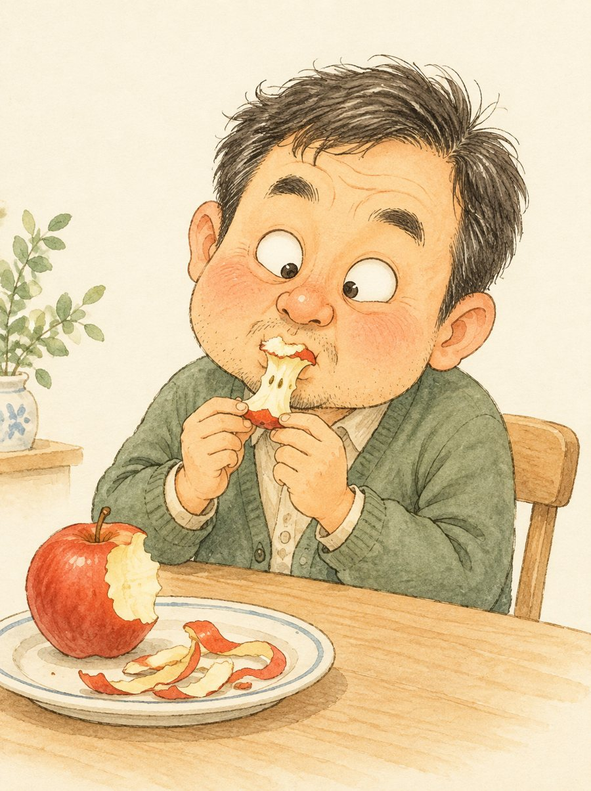
사과 맛
두툼한 사과 살 한 뼘 베어내 입에 한가득 오물오물 씹을 때 나오는 입안 흠뻑 적시는 단내 나는 즙보다
사과 살 다 베어내고 귀퉁이 남은 배와 꼭지 사이 어렵사리 붙어 있는 쬐끔 얼러내 입안 한 귀퉁이 꿔다 놓은 보릿자루 모양 처박혀 스물스물 뱉어내는 잔즙의 맛 사과의 참 맛
2013년 10월 17일(목) 사과를 먹으며 적어 보았다.
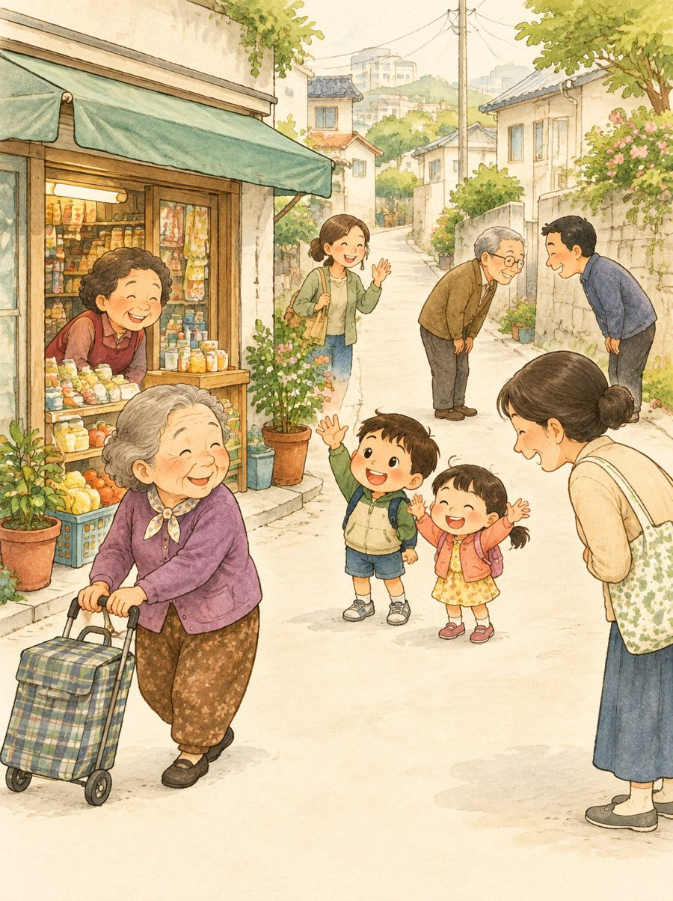
4부 이웃과 친구
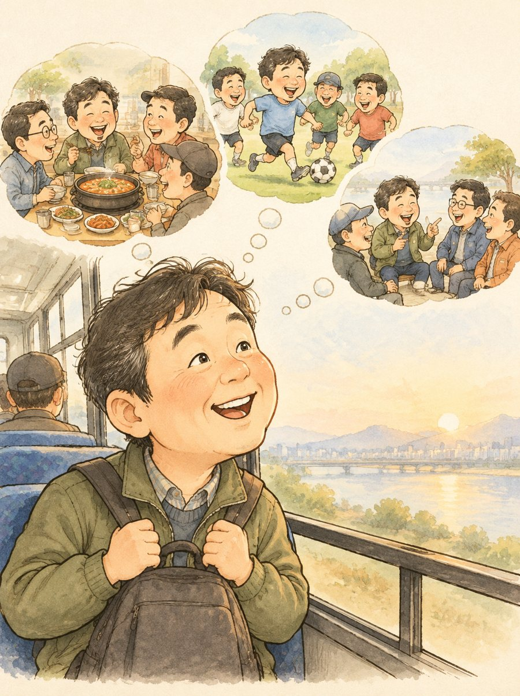
친구
친구 가장 친숙한 단어 친구 가장 친밀한 말 특별히 주는 것도 없고, 받은 것도 없다. 유별나게 주면 멀어지고 받으면 민망해 진다.
친구가 좋다. 만나면 밥 먹고 운동하고 목욕하고 장난치고 그러다 때론 싸우기도 하고 별거 없이 그냥 좋다 친구 만나러 간다. 어제 잠을 설쳤다. 새벽차를 탔다. 아침 입맛도 없다. 오늘 나는 친구 만나러 간~~~~~~~~다.
2011년 6월 20일(월)
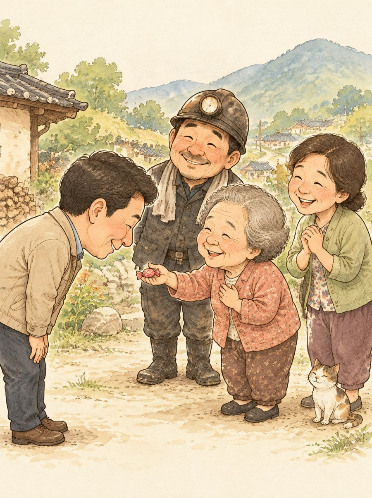
인 사
태백의 낯선 동점 마을 삶에 지친 굳은 얼굴 외지인 경계의 차가운 얼굴 목소리 다잡고 “안녕하세요” 탄색 얼굴 아저씨 두 분 이내 천사의 미소 “안녕하세요” 어색한 주룸 할머니 해맑은 미소 “안녕하세요” 경계의 눈초리 중년 아줌마 멋쩍은 미소로 이내 얼굴 바꾸네 “안녕하세요” 뒤뚱뒤뚱 할아버지 칭찬하시네 “안녕하세요” 맘씨 좋은 동네 할머니 사탕까지 주시네 “안녕하세요” 인사했더니 동점 마을이 다 웃었네
2011년 6월 18일(토)
동점초등학교 학생들이 동네 봉사활동을 하는 모습을 보며 적어보았다.
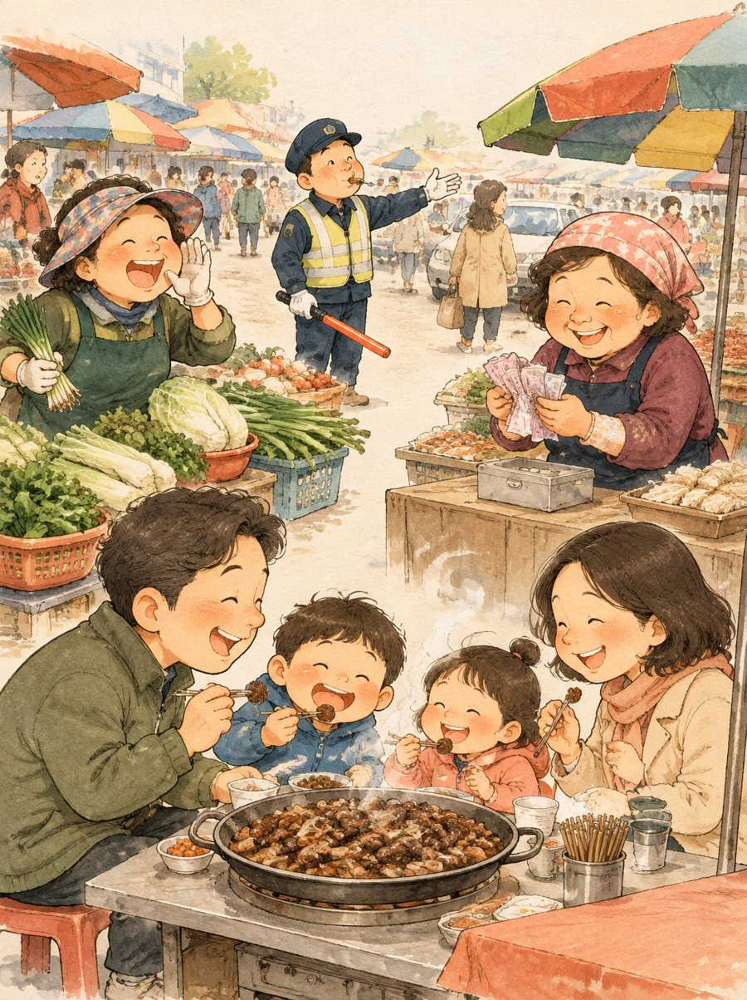
재래시장
“어서오세요!” “이리오세요!” “삑삑” 주차 안내 소란 재래시장의 활기 고단한 노동 후 순대국밥 한 그릇 삼에 지진 마음에 소주 한 잔 친구 만나 “허허허” 너털 웃음 재래시장의 삶기 사는 게 뭔가 친구 만나 밥 한 그릇 가족과 함께 순대볶음 외식 오늘 매상올린 구겨진 돈 세는 맛 이게 사는건가?!
2011년 7월 8일(금)
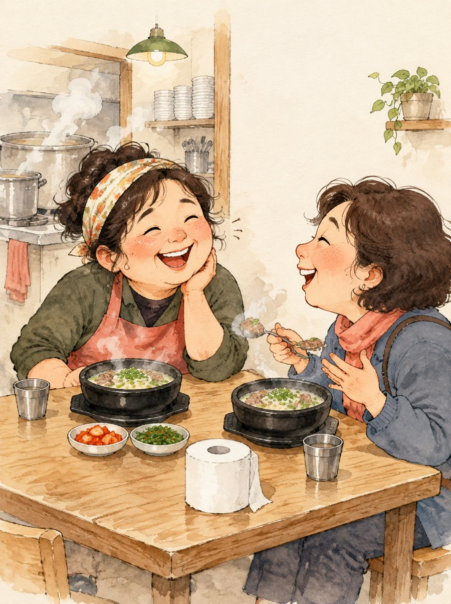
순대국집 아줌마
장사 하느라 지친 몸 화장지 베게 삼아 새우잠 “장사 안 해요?” 손님 재촉에 입가 침 닦네 찾아온 손님 묻지도 않은 얼굴 다친 얘기 순대국집 아줌마 피식 웃음 맞장구 행복해진 아저씨 입가 함박웃음 나름 핸섬한 아저씨 손님 비싼 음식 주문하는 친한 듯한 목소리 먼저 온 외로움 달래러 온 홀아비 아저씨 먹던 순대 남기고 이내 뜬 자리 외로운 삶 안 쓰런 홀아비 자리 고단한 홀어미 삶 자리
2011년 7월 8일(금)
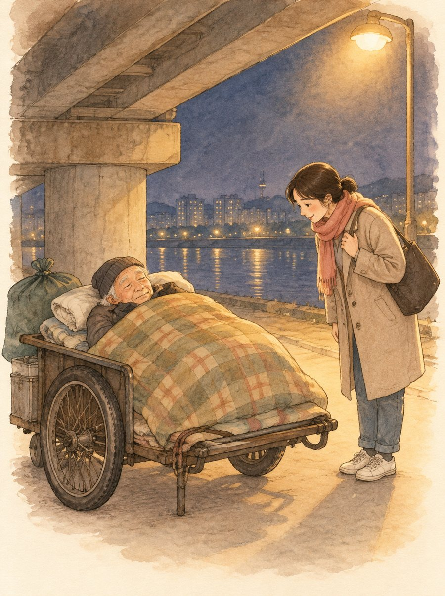
손수레 침대
다리 밑 노숙인 할아버지 차가운 손수레 의자 삼았네 아무도 보지 못 하네 따뜻한 밥 그리며 횡단보도 건너네 사랑하는 가족 그리워 집 데려다줄 버스 향해 종종걸음 다리 밑의 노숙 어른 누구의 눈에도 안 들어 오네 환한 가로등 불은 밝은데 외로운 외기러기 할아버지 소주 한 병 짝기러기 삼아 침대 삼은 손수레에 조용히 눕는다
2011년 7월 7일(목)
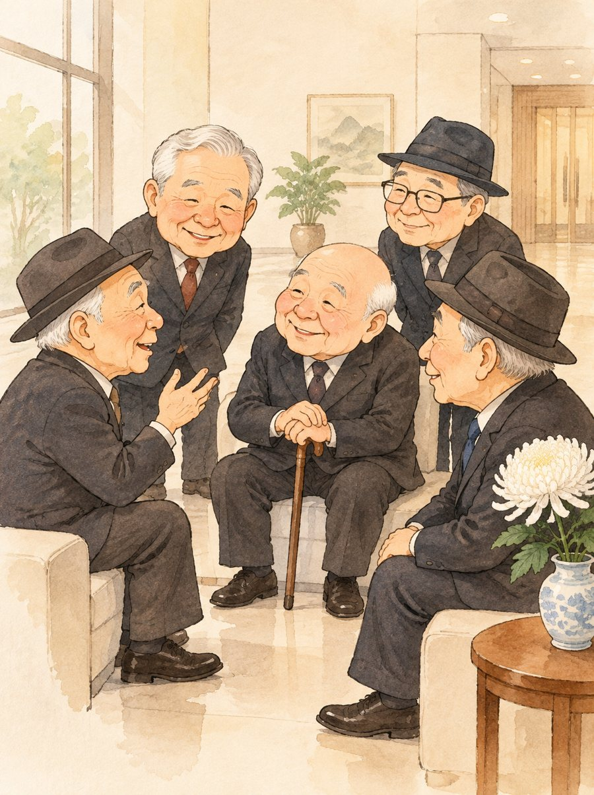
장례식장
古稀(고희)앞둔 친구 후두암 사망 애도하러 친구 삼삼오오 공무원 은퇴 친구 위암 군인 퇴역 친구 간암 먼저 간 친구 소식 전하는 광고시간
대머리, 흰머리. 중절모 젊은 시절 패기는 다 어디가고 축 쳐진 어깨 애처롭네 옅은 미소 속에 재색 그림자
직장에서 반 평생 땀 흘리고 나라위해 한 평생 목숨 걸고 자식위해 일평생 피를 토하고 장렬히 쓰러진 한 무명인생의 장례식
2011년 7월 6일(수)
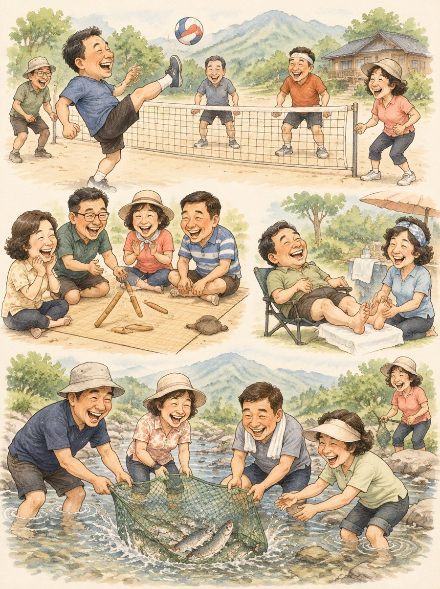
행복 충전소
청정 태백에서 청심 친구 모였네 만사 제치고 달려온 무심 친구 반갑네 매달 만나도 싫지 않은 친구 3박4일 뒹굴어도 지루하지 않은 친구 헤어지기 싫어 휴게소 또 만나네
맛난 음식 준비한 섬김맨 완벽 즐김을 누리게 한 준비맨 발 맛사지로 예수님 본받는 세족맨 부상투혼 베드로 닮은 족대맨 남편 따라 불평 않고 따라와 준 동행녀
모이면 진한 농도 이해 파트너 바꿔 포크댄스도 예스 박박 우김 족구 웃음으로 넘기고 윷놀이 억지 써도 용서 뭐든 받아 용서하는 행복 충전소 에스라여! 영원하라!
2011년 8월 20(토)
본인이 1988년부터 소속되어 23년간 모여온 신학대학원동창모임인 에스라성경연구모임 여름가족수련회를 마치고 느낀 점을 적었다.
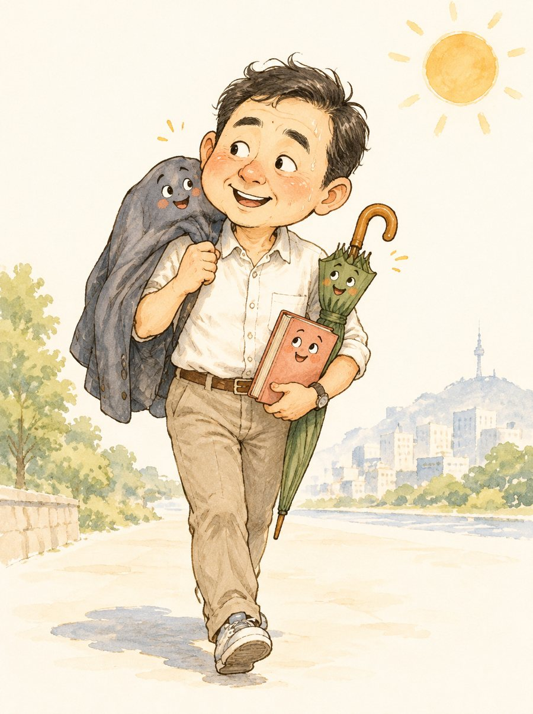
친구
더워 옷 벗어 어깨 맨 것 아니오 비 두려워 우산 집어든 것 아니라니까 손 허전해 책 한 권 팔짱 긴 것 아니라네
외톨이 홀아비 홀어미 외롬둥이
친구 그리워 외투 벗 삼고 우산 말동무 삼고 책 속 친구 동무 삼으니 세상의 모든 것 나의 동반자
2013년 9월 11일(수) 날씨가 더워서 웃옷 벗어 어깨 매고 가다가 문득 생각이 났다.
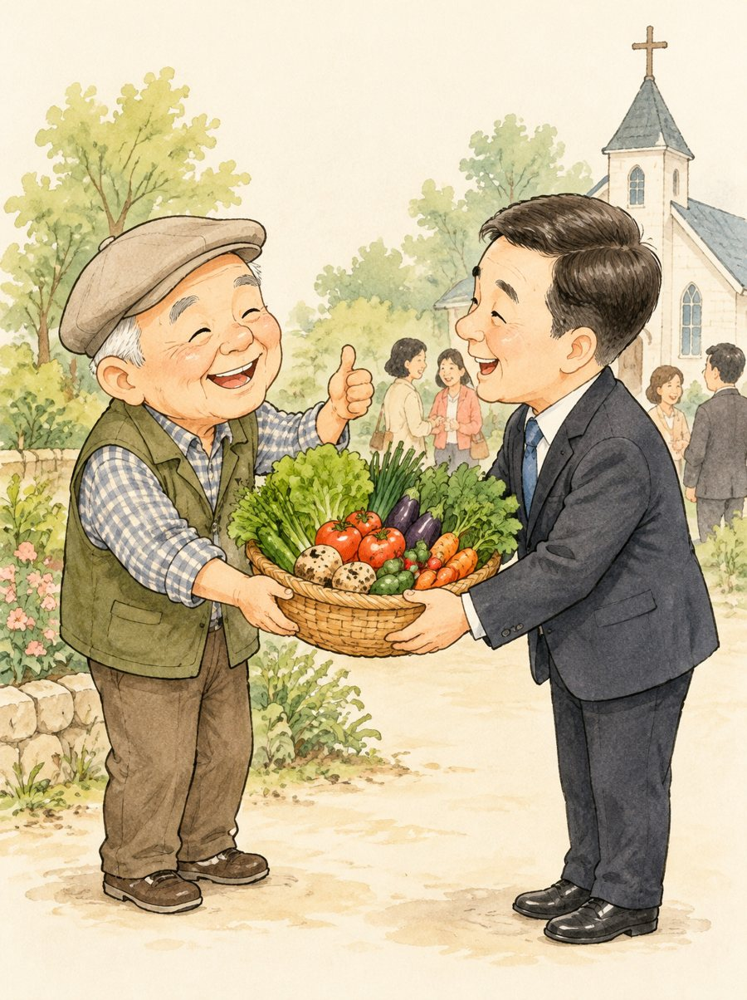
당신은 '베드로'라
새암교회에서 함께한 시간들 추억의 세월 되집어 보니
한 마음 교회 사랑 한 심정으로 주님 사랑 집사님의 흠도 점도 없는 염치 없이 받기만 했네요
예수님 곁에 베드로같이 긍정 마인드로 응원해 주심 얼마나 힘이 되었는지 잊을수가 없습니다
매 번 힘이 되어 주시고 필요할 때 도움이 되시고 찾을 때 나타나 주시고 예배 후 인사때마다 힘찬 목소리로 응원해 주시고
보이지 않을 때도 교회를 위해 기도해 주시고 때마다 텃밭 채소 소북이 담으시고 당신의 사랑 '찰랑찰랑'으로 되지 않아 넘쳐야 속이 시원한 정으로 채워주셨습니다
주님이 불러주실 이름 제가 지어 드립니다 P.E.T.E.R., 당신은 반석, '베드로'이십니다
2024년 1월 26일(금) 오후 6시 보정장례식장 임동일집사님의 임종예배, 입관예배때 고임동일을 생각하며......
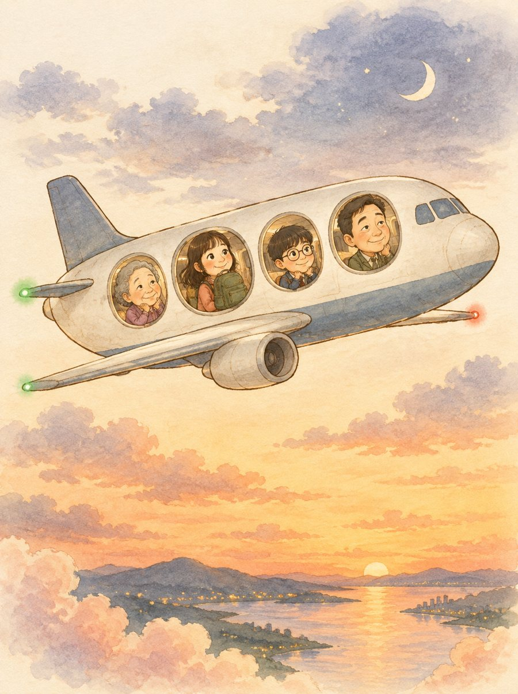
밤 비행기
밤 하늘에 비행기가 떳다 파란 불, 발깐 불 뽐내며 붉은 노을 가른다 무슨 사연 품고 날을까
10여년 만에 파산으로 인사도 없이 떠난 딸만나러 가는 노모 외교관 꿈 안고 큰 짐 실고 홀로 탄 중3 딸 날버리고 떠났다는 원망많던 엄마 만나러 가는 딸 진액 쏟아 목양횟불 든 영혼의 등대지기 목사 안식길 애끓는 기도 끝에 천리먼 타국 시집 보내고 보고잡은 딸만나는 어미 해외연수 스팩 쌓아 취업바람 가슴 안은 젊은 학도
사연은 제각각 발간 등, 파란 등 번갈아 켜니 밤 비행기 어둔 하늘 무지개 빛 꿈
2012년 8월 3일(금) 광은기도원에서 저녁에 묵상중에 밤에 하늘에 뜬 비행기를 보며 적어보았다.